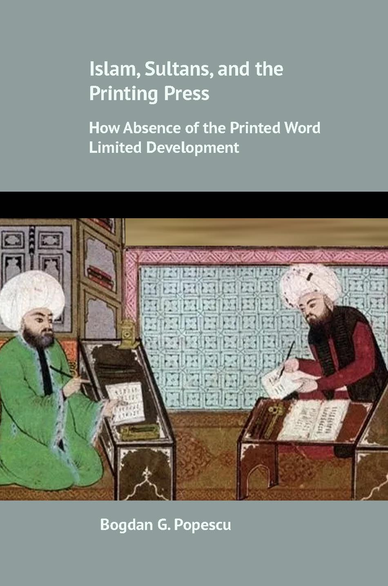

Books
Imperial Borderlands
Institutions and Legacies of the Habsburg Military Frontier
Cambridge University Press, 2024
Extractive institutions are a key factor associated with colonialism whereby historical states exploited local populations for the benefit of the former. A whole range of studies investigate the negative effect of Western extractivism, while more recent works indicate that extractivism can in fact be good. This book argues that these views are incomplete. The reason for these contrasting views is that both of these sides take the concept of extractive institutions as monolithic, omitting that extractive institutions could in fact entail a variety of dimensions including imperial investment, transformation of the local property rights regime, and coercion, which could directly impact development.
I propose a conceptual framework for understanding the ambivalent effect of extractive institutions, which depends on the three factors: investment, property rights, and violence. The worst outcomes for development are cases of extractivism with low state investment in infrastructure, high transformation of local society by removing property rights, and high physical coercion. To substantiate these claims, this book draws from a diversity of historical and modern data sources, tracing the evolution of Habsburg Military Colonialism, an institution that the central state created in the 1500s over vast territories in Central and Eastern Europe.
A book workshop took place on September 17, 2021. Discussants included Kristin Fabbe (Harvard Business School), Mark Dincecco (Michigan), Grigore Pop-Eleches (Princeton), and Tomáš Cvrček (University College London). The book is part of the Cambridge University Press Economic History Series.
It received Harvard University’s Davis Center 2024 Book Prize Honorable Mention for an outstanding monograph on Russia, Eurasia, or Eastern Europe in anthropology, political science, sociology, or geography, awarded by the Association for Slavic, East European, and Eurasian Studies.
Praise for Imperial Borderlands
“A new theory of why states are divided into a core and periphery. Pathbreaking.”
—James Robinson, University of Chicago
“How do empires govern their colonial territories? Which are the consequences of their legal and social institutions for development, democracy and collective trust? In this extremely smart book, Bogdan Popescu exploits a trove of historical and contemporary data on the territories controlled by the Habsburgs to offer a sophisticated examination of imperialism and colonialism. Going beyond its intrinsic interest for Europeanists, Imperial Borderlands will be a must-read for researchers on the political economy of development.”
—Carles Boix, Princeton University
“This innovative study illuminates one of the most consequential border zones in world history and traces its institutional legacy into the present day. It also has many wise things to say about extractive institutions more widely.” —Sheilagh Ogilvie, Oxford University
“What are the long-term effects of military colonization on the colonized? Through a detailed study of the Habsburg Empire Bogdan Popescu discovers persistent attitudes and behaviors characteristic of pre-capitalist family and property relations. Anyone interested in European victims of colonization or colonial legacies more generally should read this book.”
—Jason Wittenberg, University of California Berkeley
“This thought-provoking book sheds new light on the negative long-run impacts of ‘internal’ military imperialism on socioeconomic development in central Europe. To make his case, Popescu employs a clever mix of archival, econometric, and narrative evidence. A well-crafted study.”
—Mark Dincecco, University of Michigan
Islam, Sultans, and the Printing Press
How Absence of the Printed Word Limited Development

My second book centers on the perceived threats by elites caused by the emergence of the printing press and how that could have been used by the opposition to undermine existing power structures. In this project, I focus on the Ottoman Empire and I argue that preventing the emergence of the printing press was used as a tool by Ottoman sultans to prevent coordination among local power holders. For this project, I compiled an original dataset which captures the amount of time different regions have been under the Ottoman Empire. Preliminary evidence, published in Comparative Political Studies, suggests that longer Ottoman rule is associated with lower contemporary economic performance.
Read the article (Winner of the James Caporaso Award for Best Article in CPS in 2022).
The project provides a novel perspective of an important mechanism for how Islamic empires can be associated with underdevelopment, which has to do with the limited availability of the printing press. The project will also consider the role of subsequent regimes up to modern times, including the role of communist regimes in eliminating the regional disparities in literacy in South-East Europe.
A book workshop took place on February 14, 2025. Participants included Timur Kuran (Duke University), Carles Boix (Princeton University), Anna Grzymała-Busse (Stanford University), Keith Darden (American University), Agustina Paglayan (University of California, San Diego), Iza Ding (Northwestern University), Ahmet Kuru (San Diego State University), and Michael Driessen (John Cabot University).